Instructions
This page is designed to get you started using the applet. The applet should be open. The step-by-step instructions on this page are to be done in the applet. You may need to toggle back and forth between instructions and applet if your screen space is limited.
 Building a Circuit With Some of the Tools
Building a Circuit With Some of the Tools
 Wire Tool
Wire Tool
 Battery Tool
Battery Tool
 Display Tool
Display Tool
 Selection Tool
Selection Tool
 Light Bulb Tool
Light Bulb Tool
 Resistor Tool and Switch Tool
Resistor Tool and Switch Tool
 Potential, Potential Difference,
Current
Potential, Potential Difference,
Current
Let's construct a simple circuit and then change some of the parameters of the circuit elements. Carry out the following six Exercises in sequence, and carry out only the suggested operations. That way the descriptions below will match what you see in the applet.
The six Exercises are organized to illustrate the functions of different Tools. A Tool is accessed by selecting one of the buttons on the left of the applet.
Click on a grid point, drag horizontally to the sixth grid point, and release the mouse button. Click on the last grid point connected, drag vertically to the fifth grid point, and release the mouse button. Then draw the remaining two sides of the rectangle in similar fashion.
The loop should have the shape shown in Figure 1 below.

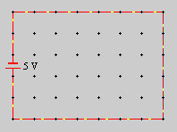
Figure 1
The wires are shown in red because the circuit is a short circuit, which means that there is very little resistance in the circuit. This results in a very large current and intense heating of the wires. The red color is intended to indicate this heating.
Notice the simulated current. The little yellow dots move in the direction from the positive pole of the battery (long bar of the battery symbol) to the negative pole. Since the positive pole is at the bottom of the battery in Figure 1, the current direction is counter-clockwise. The current direction from the positive to the negative pole (or, more generally, from high to low electric potential) is the conventional current direction. Positive charge carriers would move in this direction.
You can also turn the current animation off by selecting "None". Figure 2 shows the drop-down menu in the Display Tool information panel.
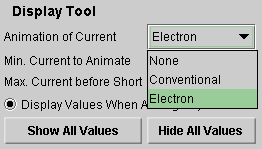
Figure 2
When the drop-down menu in the Display Tool information panel is not opened up, the panel looks as in Figure 3 below.
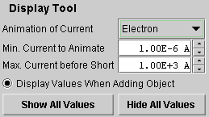
Figure 3
The "Minimum Current to Animate" is the threshold current for a circuit element below which the current in that element will not be animated. The "Maximum Current Before Short" is the maximum current in a wire segment for which the segment will be shown in black. If the current in a segment is larger than that, the segment will be shown in red as in Figure 1 above. You can reset these threshold values by typing new values in the data fields.
Click "Hide All Values" and observe that the 5-V label of the battery disappears. Click "Show All Values" to make it reapper.
The radio button "Display Values When Adding Object" acts only on objects to be added. Deselect this button, and then add a resistor to the circuit, by selecting the Resistor Tool and clicking on a wire segment in the circuit. The resistance value will not be displayed. Then select the Display Tool and click "Show All Values". The resistance of the resistor will be displayed.
Notice that the wires change to black when the resistor is inserted. The short circuit exists no longer. Restore the short circuit by replacing the resistor with a wire element. To do so, select the Wire Tool and drag over the resistor from the grid point on one side of the resistor to the grid point on the other side.
Notice how the current direction is reversed when the battery polarity is reversed.
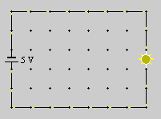
Figure 4
Select the Selection Tool, and then select the light bulb in the circuit by clicking on it. Notice that the Light Bulb information panel below the circuit area indicates that the nominal voltage of the light bulb is 10 V. (For a store-bought bulb, the "nominal voltage" is the voltage written on the bulb.) See Figure 5 below.
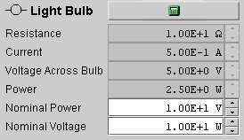
Figure 5
However, the battery has an emf of only 5 V. Therefore, the light bulb is running at too low a voltage and, indeed, the applet shows it to be quite dim (short yellow rays).
Reset the battery emf to 10 V. To do so, click on the battery with the mouse after selecting the Selection Tool. The Battery information panel will open up, with an emf data entry field at the bottom. See Figure 6 below. Change the emf from 5 V to 10 V in the EMF data entry field, and then click the calculator icon. Figure 6 shows the panel after the emf has been reset to 10 V. Observe that the bulb now burns brighter.
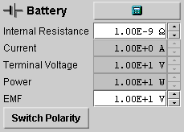
Figure 6
Notice that some data fields in the Battery information panel are in grey, others in white. The ones in grey indicate calculated values that cannot be set in this panel, because they depend on other parameters. The ones in white, the internal resistance and the emf of the battery, can be changed in this panel by typing new values in these data fields or by using the up/down arrows next to the data fields. To implement the new values, click the calculator icon. Don't make any changes other than the ones requested here before completing all six Exercises.
Select the light bulb again and change its nominal voltage from 10 V to 5 V so that the 10-V battery will be applying too much voltage to the bulb. Observe that now the bulb burns even brighter.
The applet is designed so that a bulb will burn out when the voltage applied to it is four times or more the nominal voltage of the bulb. Try to burn out the bulb this way.
To replace the burnt-out light bulb, you can select the Light Bulb Tool, which will open the Light Bulb Tool panel shown in Figure 7 below. For details, please see Number 7 under Help.
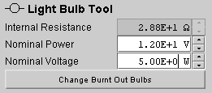
Figure 7
Then add a circuit branch parallel to the light bulb as shown in Figure 8 below. First draw the wires with the Wire Tool selected. This will result in a short circuit in the parallel branch.
Then insert an open switch into the new branch. Do so by selecting the Switch Tool and then clicking on the wire segment where you want to insert the switch. Make sure the "Open Switch" radio button in the Switch Tool panel is selected before inserting the switch. Once the open switch is inserted, the short circuit is broken and the wires should again be in black, without any current.
Finally insert a 10-W resistor into the parallel branch, by selecting the Resistor Tool , making sure the resistance in the Resistor Tool panel is set to 10 W, and clicking on the wire segment where you want the resistor to be. The final circuit should look as in Figure 8 below.
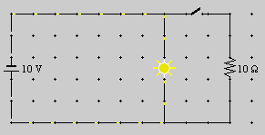
Figure 8
What do you think will happen when you close the switch? Will the bulb burn less bright than before?
Find out by selecting the Selection Tool, clicking on the switch, and then unclicking the "Open Switch" radio button in the Switch information panel. The switch will close. You should find that there is no change in the bulb's brightness and that there is now current in the branch containing the resistor.
Potential. If you still have the circuit in your applet that is shown in Figure 8, erase the parallel branch containing the resistor and switch. Do this by selecting the Eraser Tool and then clicking on all segments of the parallel branch.
Make sure the battery emf is set to 10 V, and change the battery polarity if necessary so that the positive terminal (long bar) of the battery is on top. Make sure the nominal voltage and power of the light bulb are set to 10 V and 10 W, respectively.
Select the Selection Tool, and click on the grid point at the top right corner of the circuit directly above the bulb. The applet will display the electric potential at this point. It should read 0 V. This value can be set arbitrarily. Set it to +5 V using the data field in the Point information panel. You should get the display shown in Figure 9 below.
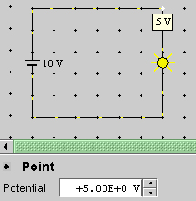
Figure 9
What potential do you expect to have at some circuit point below the bulb? Click at such a grid point and observe. You should find -5 V if the polarity of the battery is as shown in Figure 9. The potential difference across the bulb should be equal to the battery terminal voltage: 5 V - (-5 V) = 10 V.
Potential Difference. You can determine the potential difference across a circuit element with a voltmeter.
Connect a voltmeter in parallel with the bulb as shown in Figure 10 below.
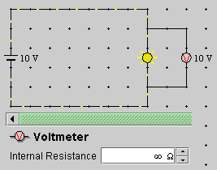
Figure 10
The voltmeter should indicate 10 V.
Note that the internal resistance of the voltmeter is set to infinity. This corresponds to an ideal voltmeter in which zero current is in the loop containing the meter and the meter has zero disturbing influence on the conditions in the circuit that it is supposed to measure. Real voltmeters have a large, but finite resistance. You can simulate this by entering a finite resistance value in the Voltmeter Tool panel before inserting the meter.
Current. The applet tells you what the current is in a circuit element if you select the Selection Tool and click on the element. Do this for a wire segment in the main branch of the circuit containing the bulb. The Wire information panel should look as shown in Figure 11 below.

Figure 11
It indicates that the current in the segment is 1 A.
Note the last row in the panel labeled "Current Direction". The three buttons in this row do not let you switch the simulated current from conventional to electron current as is done by the Display Tool. Instead, the two buttons with arrows let you assign a direction to a wire element that will be taken as the positive direction in performing calculations involving currents. Clicking the button with the icon "-" removes the direction indicators. Observe what happens when you alternately click the three buttons. The actual current direction animated by the applet is unaffected by this wire direction.
To measure the current in a wire segment, insert an ammeter into this section. Select the Ammeter Tool and click on a wire segment in the main branch of the circuit. The result should look as shown in Figure 12 below.
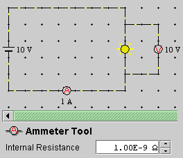
Figure 12
The ammeter reads 1 A, confirming the earlier determination. Note the very low internal resistance of the ammeter indicated in the Ammeter Tool panel. An ideal ammeter would have zero resistance, thus causing zero disturbance of the conditions present in the circuit. Real ammeters will usually have larger resistance values than the applet's default resistance of 10-9 W. You can change the internal resistance by entering another value in the data field of the Ammeter Tool panel before inserting the meter into the circuit.